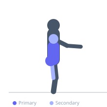
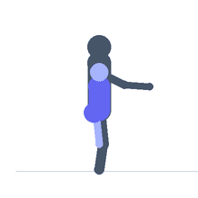

Exercise guide / Bird Dog
Bird Dog
The bird dog is a quadruped core stability exercise in which the athlete extends the opposite arm and leg simultaneously while maintaining a neutral spine and level pelvis. It directly trains the erector spinae, multifidus, and gluteus maximus in their stabilization roles while challenging the core to resist lateral and rotational forces. Widely used in rehabilitation and athletic training for its effectiveness in developing lumbar stability and spinal health without compressive loading.
Primary muscles
erector spinae
gluteus maximus
Secondary muscles
transverse abdominis
deltoid anterior
biceps femoris long head
Stabilizers
internal oblique
external oblique
gluteus medius
Equipment
No Equipment (Bodyweight)


Starting position
- Begin on all fours (quadruped position) with hands directly under the shoulders and knees directly under the hips. Spine is neutral — not arched or rounded.
Setup
- Use a mat for knee comfort. Set the neutral spine position before each repetition.
Steps
- Step 1: Begin in quadruped with neutral spine.
- Step 2: Brace the core gently — think about stiffening the entire trunk.
- Step 3: Simultaneously extend the right arm forward (thumb up) and the left leg back until both are parallel to the floor.
- Step 4: Hold the extended position for 1–2 seconds. The pelvis should remain level — do not rotate or hike the hip.
- Step 5: Return with control and repeat on the opposite side.
Coaching cues
- Long from fingertips to heel — reach in opposite directions
- The pelvis stays flat like a table — do not spill the imaginary glass of water on your back
- Engage your glute — squeeze the extended leg's buttock
Breathing
- Exhale as you extend arm and leg. Inhale as you return.
Range of motion
- Arm and leg should reach full extension, parallel to the floor, without any spinal rotation or hip hiking.
Tempo
- 2–3 second hold at extension, controlled return. 3-1-2 tempo.
Common mistakes
- Rotating the pelvis and hiking the hip on the extending-leg side
- Hyperextending the lower back during the leg extension
- Rushing the movement — the value comes from slow, controlled execution
Safety
- Appropriate for most populations. Modify by reducing lever arm (extend arm only or leg only) if full coordination is challenging.
- Keep the neck neutral — do not look up.
Training
- strength: 8–15 reps
- endurance: 15–20 reps
- strength: 2–3 sets
- endurance: 3–4 sets
- Rest: {'strength': 60, 'endurance': 45}